Frisktid
Mer overskudd, mer glede, mer liv. Frisktid gjør kunnskap om aktivitet, ernæring og trivsel enkel å bruke, for alle, i alle aldre.
Mer overskudd, mer glede, mer liv.
Bevegelse som gjør deg glad, mat som smaker godt, og hverdager med rom for å puste.
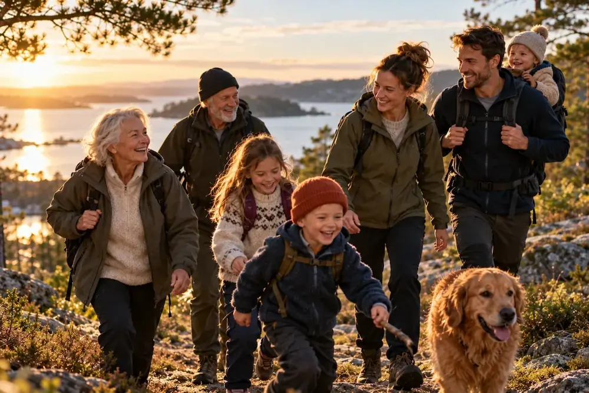
Tre områder som henger sammen
Frisktid handler om aktivitet, ernæring og trivsel. Områdene påvirker hverandre hele tiden: bevegelse gir bedre søvn, maten påvirker humøret, og den som har det bra, har lettere for å ta gode valg.
Alt bygger på forskning, ikke trender, og lages sammen med fagpersoner. Trening, mat og trivsel skal være fine ting, ikke plikter og mas.
Aktivitet
Bevegelse i hverdagen, og hva den gjør med kroppen og hjernen. Litt er bedre enn ingenting.
Ernæring
Mat, måltider og hvordan kostholdet påvirker kropp og hode. Råvarer først, uten forbud og dårlig samvittighet.
Trivsel
Søvn, stress, fellesskap og mestring. Det alle kan gjøre i hverdagen for å ha det bedre.
Samme kunnskap, hver sin målgruppe
Frisktid er for alle, fra barnehagen til eldresenteret. Innholdet tilpasses hver målgruppe, mens uttrykket er det samme, så Frisktid blir noe man kjenner igjen gjennom hele livet.
Hver målgruppe har sitt eget fargepar.
Helsekunnskap fra første skoledag.
Undervisningsopplegg, plakater og barnebøker for hvert alderstrinn.
Friskere ansatte, bedre arbeidsdager.
Kurs, foredrag og abonnement som kan inngå i HMS-arbeidet.
Folkehelse som når hele befolkningen.
Felles materiell for barnehage, skole, helsestasjon og eldresenter.
Aldri for tidlig, aldri for sent.
For barn, foreldre og besteforeldre, med samme kunnskap.
Kunnskap i flere former
Materiell, kurs og ressurser som brukes der folk er, med lite skjerm.
Det som kan brukes med en gang, er samlet på en felles ressursside: treningsøkter, oppskrifter og øvelser for ro, gratis og uten innlogging. Øktene og øvelsene har tidtaker med lydsignaler, så telefonen kan legges fra seg.
Utdanningsmateriell
Undervisningsopplegg, plakater og barnebøker, tilpasset hvert alderstrinn fra barnehage til videregående.
Kurs og foredrag
For arbeidsplasser, kommuner, organisasjoner og familier, sammen med fagpersoner.
Abonnement
Treningsopplegg, oppskrifter og selvhjelp for bedre trivsel, for privatpersoner og ansatte.
quiply
En lukket sosial app for klassen, laget eller koret. Uten likes, algoritmer og fremmede, og med voksne som passer på.
Trivsel · Barn og ungeGoood Morgen
En morgenrutine-app for barn, som de voksne styrer. Én oppgave om gangen gir roligere morgener for hele familien.
Familie · MorgenrutineRestefest
Handleliste og oppskrifter som starter med det du allerede har i kjøleskapet. Mindre som kastes.
KommerTroverdighet først
Frisktid samarbeider med virksomheter som deler målet om mer overskudd og glede i hverdagen, og stiller tydelige krav.
Data fra Frisktid inngår aldri i en avtale. Samarbeidspartnere får ingen innflytelse over innholdet, og alle samarbeid vises åpent.
Fagpartner
Fagpersoner og forskningsmiljøer som bidrar med innhold og kvalitetssikring.
Produkt og råvarer
Produsenter av mat, råvarer eller utstyr som passer med det forskningen viser.
Arena og distribusjon
Treningssentre, frivillige og bibliotek som gir plass til kurs og materiell.
Finansiering
Stiftelser, fond og investorer som bidrar uten å påvirke innholdet.
Varm, enkel og full av energi
Tone of voice
Frisktid skal ikke være fleipete, men heller ikke knusktørr. Teksten inspirerer og gjør ting enkle, uten pekefinger.
Hver flate formidler én konkret påstand fra forskningen, skrevet som en hel setning. Brødteksten forklarer hvorfor den stemmer.
90 sekunder er nok.
Halvannet minutts bevegelse øker oksygentilførselen til hjernen så mye at konsentrasjonen din kan måles bedre i opptil tre timer etterpå.
Tarmen snakker med hjernen.
90 % av kroppens serotonin – det vi kaller «lykkemolekylet» – produseres i tarmen.
Slik skriver Frisktid
- Snakk direkte til leseren, med «du» og «din».
- Skriv om det man får: overskudd, glede og gode dager.
- Én påstand per flate. Overskriften er en hel setning med punktum.
- Forklar fagord der de brukes, gjerne mellom tankestreker.
- Bruk tall når tallet er poenget: 20 km, 90 sekunder, 90 %.
Det unngår vi
- Byråkratiske ord som «folkeopplysningsprosjekt».
- Tekst som handler om sykdom, død og å «unngå» noe.
- Plikt, mas, forbud og dårlig samvittighet.
- Utropstegn, emojier og emneknagger.
- Faglig innhold som ikke er kvalitetssikret.
Tre linjer, én bokstav
Navn og logo
Navnet viser til at enkle valg i hverdagen gir mer overskudd og flere gode dager med frisk kropp og sinn. Det er aldri for tidlig å lære, og aldri for sent å begynne.
F-en i logoen er tegnet av tre linjer, én for hvert område. Til sammen blir de én bokstav, slik de tre områdene til sammen er Frisktid. På sidene for ett område er områdets linje fremhevet, så logoen viser hvor man er.
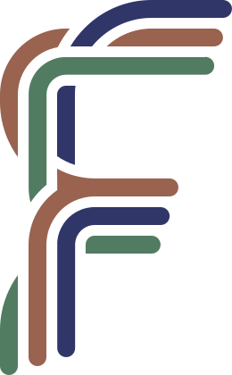
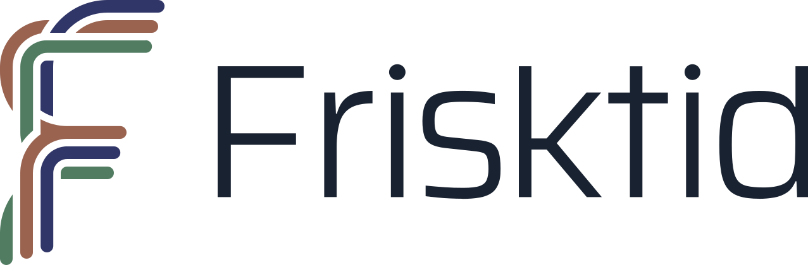
Hovedlogo · lys bakgrunn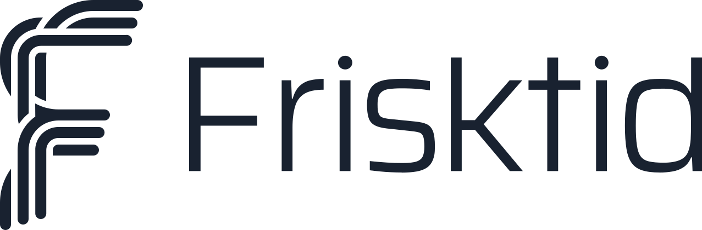
Ensfarget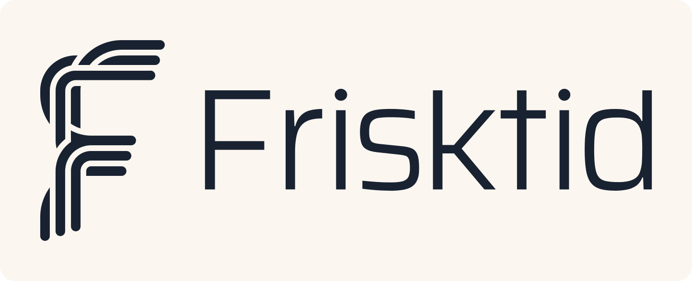
Label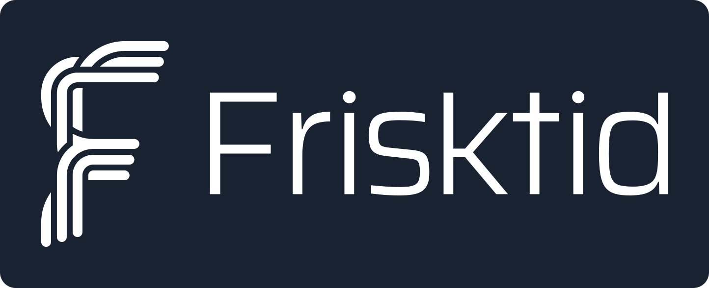
Utstanset labelSju fargepar og to grunnfarger
Fargesystem
Hvert område og hver målgruppe har sitt eget par: en mørk flate og en lys partnerfarge.
Store overskrifter på en farget flate står i partnerfargen der kontrasten er minst 3:1, ellers i krem.
Tre skrifter, tydelige roller
Typografi
Syne gir overskriftene energi og karakter. Source Serif 4 holder brødteksten varm og lettlest. Inter brukes til etiketter, knapper og metatekst.
Alle titler fordeles over linjene med jevn lengde, så et kort ord ikke blir stående alene.
Glede, fellesskap og dagslys
Fotostil
Bildene viser vanlige mennesker i alle aldre som har det fint: på tur, rundt kjøkkenbordet, i klasserommet og i nabolaget.
Varmt morgen- og kveldslys, ekte smil og norske hverdagsmiljøer. Bildet skal vise gleden ved det man gjør, ikke prestasjonen.
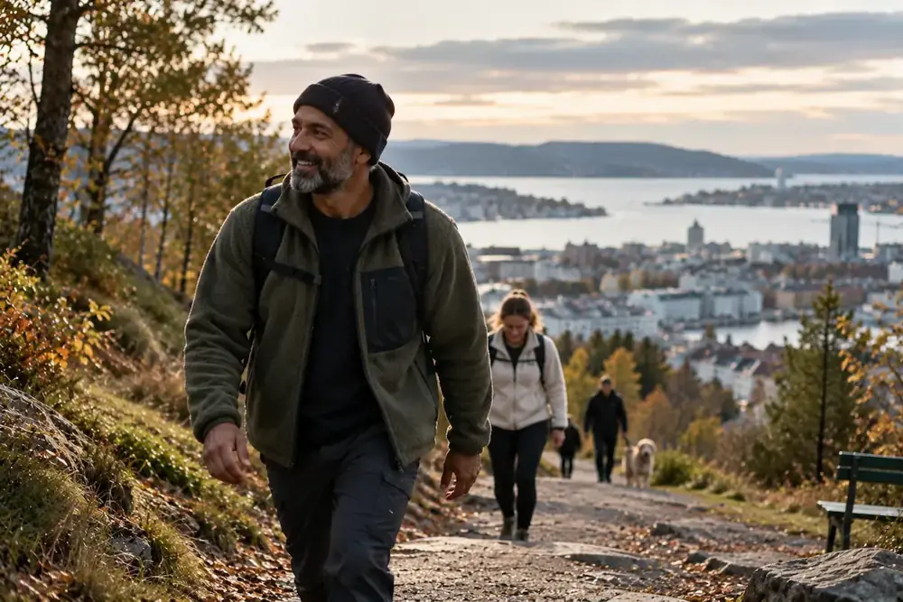
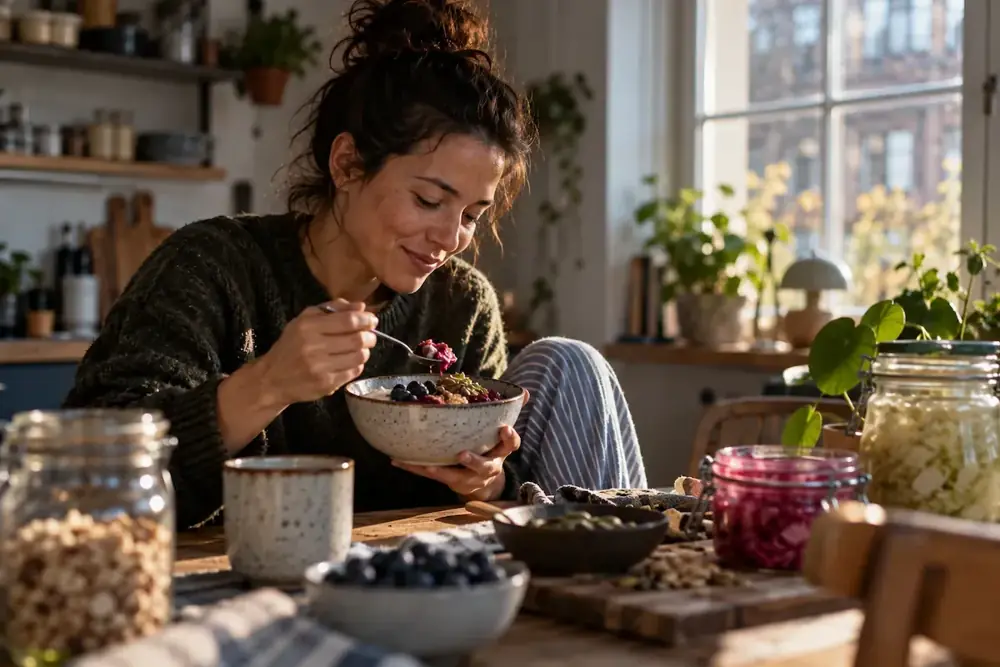
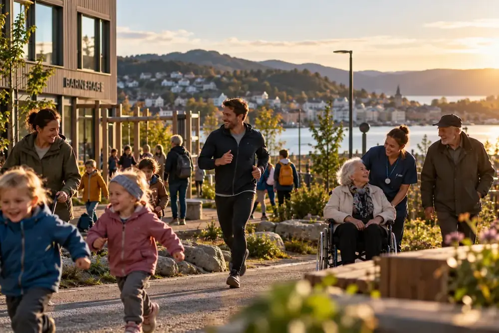
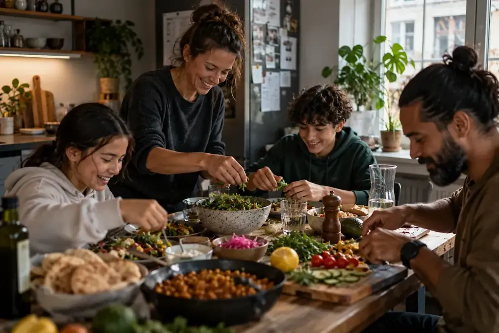
Ett bilde, én flate, én påstand
Layoutsystem
Plakater og innlegg er et kvadrat på 1200 × 1200 px, delt i et fotografi og en ensfarget tekstflate i ett av fargeparene.
Bildet ligger over teksten eller til venstre for den. Margen er 75 px på alle sider, og logoen står nederst til høyre i partnerfargen.
Fra hva, til hvem, til i dag
Nettsiden
Nettsiden er en demo som viser mulighetene. Den svarer på spørsmålene i den rekkefølgen folk stiller dem.
Det samme systemet brukes overalt: få tekststørrelser, faste avstander, kort i 4:5 og 3:2, og tydelig tastaturfokus.
Forsiden
- Hva er Frisktid
- Hvorfor Frisktid
- Tre områder
- Prøv det i dag
- For hvem
- Samarbeid
- Kontakt
Sidene
- Tre områdesider med ressurser, tilbud og apper
- Fire målgruppesider med ressursbibliotek
- Ressurser: treningsøkter, oppskrifter og øvelser for ro
- Samarbeid, med krav og søknad
- Om Frisktid